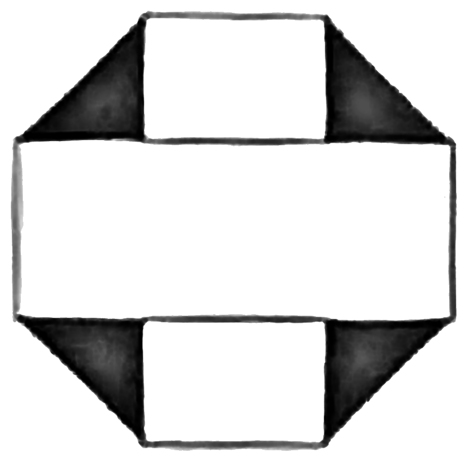
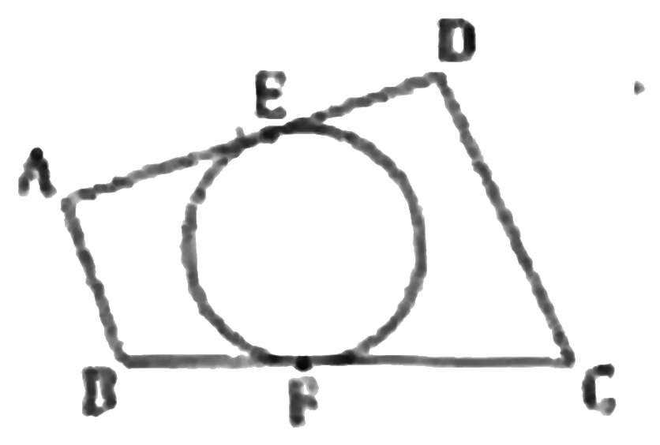

נתון: a < b < 0
מה מהבאים נכון בהכרח?

בסרטוט שלפניכם מתומן משוכלל, שצלעו 4 ס"מ, בו הועברו כמה אלכסונים שיוצרים את המשולשים שבסרטוט.
על פי נתונים אלו והנתונים שבסרטוט, שטח אפורשטח שחור = ?
x, y ו־z הם שלושה מספרים עוקבים. נתון: z < y < x
מה מהבאים נכון בהכרח לגבי הביטוי |(y − z)| − |(y + x)| + |(z − x)| ?

בסרטוט שלפניכם קובייה שאורך צלעה הוא 3 ס"מ. עכבר יוצא מנקודה A לטייל במסלול המתואר בציור (A → B → C → D → A).
אם מהירותו של העכבר היא 6 ס"מ לשנייה, תוך כמה זמן (בשניות) יעבור העכבר את המסלול פעמיים?
x ו־y הם מספרים שלמים. נתון: x · y = 144
איזו מהטענות הבאות נכונה בהכרח?

בסרטוט שלפניכם טרפז ABCD (AB ∥ CD) בו מעגל. הנקודות E ו־F הן נקודות ההשקה של המעגל לצלעות הטרפז.
על פי נתונים אלו והנתונים שבסרטוט, EFקוטר המעגל = ?
זוג הורים ו־4 ילדים הגיעו בחופשה למלון בו הזמינו 3 חדרי שינה. בכל חדר שינה יכולים לישון 2 אנשים בלבד.
בכמה דרכים שונות יכולה המשפחה להשתבץ בחדרים השונים?
A, B ו־C הן אותיות המייצגות ספרות מ־1 עד 9. נתון: ABC = CBA
במידה ונבחרים 3 ספרות באקראי, מה הסיכוי ששלושת הספרות שנבחרו יקיימו את הנתון?
נתון: x < −1
x¹¹|x| − x¹⁰ = ?
שטחו של מתומן משוכלל שאורך צלעו a ס"מ הוא x סמ"ר.
מה אורכה (בס"מ) של צלעו של מתומן משוכלל אחר ששטחו 4x?